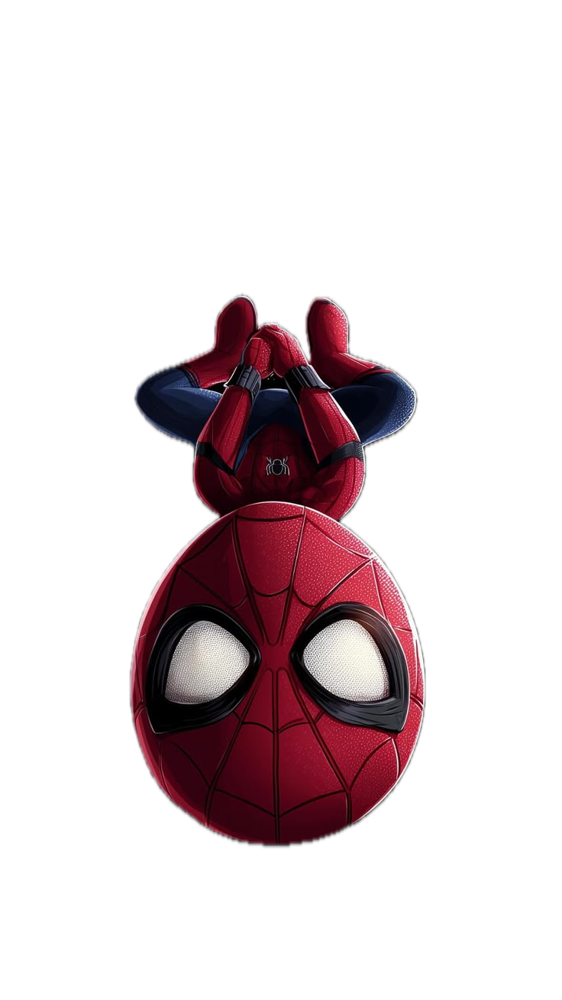

A little companion for Windows
Make your desktop feel a little more alive.
A tiny character that wanders across your screen, nudges you to take a break, and keeps you company while you work.
Kiko is Windows-only for now. You can still download the installer.
Pick your companion.
Every pet has its own personality. Your choice follows you through the page.
Kiko
What Kiko does.
Hydration reminders
Every hour by default. Change it to anything from 15 minutes to 2 hours. Pause whenever you like.

Walks, jumps and climbs
Kiko wanders on its own. You decide how often and how high it jumps.
Focus and breaks
Run a focus session and Kiko keeps you company.
Streaks and looks
Build a daily streak to unlock Shadow and Neon outfits.
Stays out of the way
Clicks pass through everywhere except the character. It never steals focus.
Private by default.
Your companion lives on your desktop, not in the cloud.
- No account. No sign-in.
- Works fully offline. Nothing leaves your PC.
- Settings are saved locally. No telemetry.
Kiko is a desktop app, so it stays on your PC and works without an account.
How it works.
-
1
Download the installer.
Grab the latest version from GitHub Releases.
-
2
Run it.
Windows may show a SmartScreen notice the first time. Click “More info”, then “Run anyway”.
-
3
Kiko appears on your desktop.
Right-click the tray icon to choose a pet and set your reminders.
Get Kiko for Windows.
One small app. No account needed.
System requirements: Windows 10 or 11, 64-bit, about 150 MB free disk. No admin rights required.
The installer is not code-signed yet, so Windows may show “Windows protected your PC”. Click More info, then Run anyway.
Kiko is Windows-only for now. You can still download the installer.
Questions.
Does Kiko use a lot of RAM or CPU?
Kiko is built with Electron. Memory use varies with your system and what else is running.
Does it work offline?
Yes. Kiko runs entirely on your PC. No internet connection is required after you download it.
Does it collect any data?
No. There is no telemetry, no analytics, and no account. Your settings stay on your machine.
Can I change how often it reminds me?
Yes. The default is every hour, but you can set it anywhere from 15 minutes to 2 hours. You can also pause reminders entirely from the tray menu.
Does it appear over full-screen apps and games?
Kiko stays on top of normal windows, but it automatically hides when a full-screen app or game is in focus so it doesn’t get in the way.
How do I uninstall it?
Open Windows Settings → Apps → Installed apps, find Kiko, and click Uninstall. Your settings file is removed with it.
Will there be macOS or Linux versions?
Not right now. Kiko is built specifically for Windows 10 and 11. If that changes, we’ll announce it on GitHub.